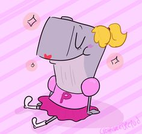
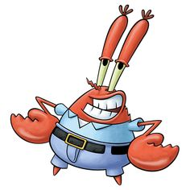
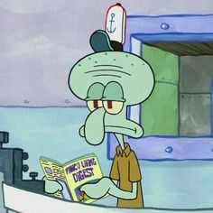

1) A square yellow sponge named SpongeBob SquarePants lives in a pineapple with his pet snail, Gary, in the city of Bikini Bottom on the floor of the Pacific Ocean. He works as a fry cook at the Krusty Krab. During his time off, SpongeBob has a knack for attracting trouble with his starfish best friend, Patrick.

2) Patrick Star is a fictional character in the American animated television series SpongeBob SquarePants. He is voiced by actor Bill Fagerbakke and was created and designed by marine biologist and animator Stephen Hillenburg. He first appeared in the series' pilot episode "Help Wanted" on May 1, 1999.
3) Pearl Krabs is a fictional character in the Nickelodeon animated television series SpongeBob SquarePants. She is voiced by actress Lori Alan and first appeared in the season one episode "Squeaky Boots" on September 17, 1999.
4) Pearl Krabs is a fictional character in the Nickelodeon animated television series SpongeBob SquarePants. She is voiced by actress Lori Alan and first appeared in the season one episode "Squeaky Boots" on September 17, 1999.
5) Squidward Q. Tentacles is a fictional character voiced by actor Rodger Bumpass in the Nickelodeon animated television series SpongeBob SquarePants. Squidward was created and designed by marine biologist and animator Stephen Hillenburg.